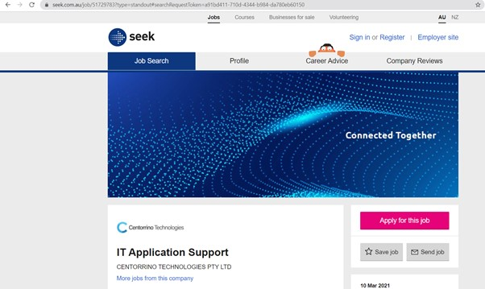

IT APPLICATION SUPPORT
This job specifically revolves around providing support and assisting customers of the company solve their IT related problems. Adding onto this, you would correspond with customer app's and the technological background segregated to this. Its catered not only to fixing specific issues but to also really invest and go all in with the clients approach in helping delight the customers of the app.
You would need to have great skills in utilising Windows and knowing how to use a computer. Furthermore you'd need to have sufficient knowledge in operating Active Directory Users and Computers, whilst also being experienced in utilising Group Policies. Ensuring you have the adaptability in such a fast paced environment is necessary, with embodying the willingness to learn being a key skill the company is looking for.
Currently, I have great knowledge in knowing how to use a computer. Having utilised a computer for over 10 years now, I can understand the specific basics on how to use it. I'm also a keen learner and am willing to add some key skills to my arsenal. Whether its from at my casual job to currently in my first year, I'm really invested in learning new things and gaining such valuable insight.
Adaptability is a key skill that I know I need to work on. I know patience is required, however familiarising myself with an environment and understanding the task and protocols at hand is something that I'm eager to work on. This can be obtained from gaining workplace experience at an IT related internship. Furthermore, honing my in depth knowledge on how it is to operate Windows and other programs such as Active Directory Users and Computers would be a necessary to expose myself to and it can be from viewing tutorials or completing short crash courses on mastering how to operate these systems.